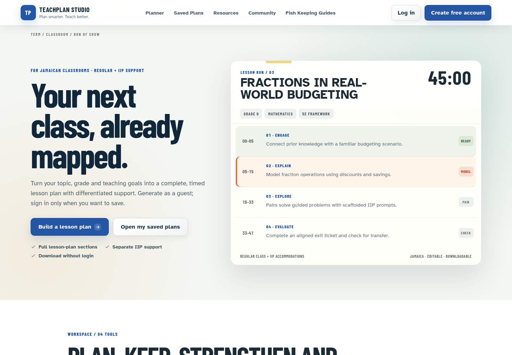

Development · Project documentation
LessonPlanToGo / TeachPlan Studio
A lesson-planning application for Jamaican teachers, with curriculum-aware setup, editable lesson timing, differentiated activities, IIP support, downloads, and saved plans.

Purpose and outcome
Turns classroom requirements into structured lesson documents that teachers can review, adapt, download, and reuse.
System architecture
A server-backed HTML, CSS, and JavaScript frontend connects to Node.js APIs and PostgreSQL storage. The deployed product offers a guest planning path and signed-in access for preserving plan history.
Implemented capabilities
- Guest lesson planning and downloads
- Separate regular-class and IIP support
- Editable timing, assessment, and evaluation sections
- Signed-in saved-plan library and reusable teaching resources
Typical workflow
- Choose the subject, grade, topic, framework, and classroom needs.
- Build a structured plan with objectives, timed activities, differentiation, and IIP accommodations.
- Review lesson content, assessment, timing, and teacher evaluation.
- Download as a guest, or sign in to save and reuse plans.
Evidence and validation
The public homepage returned HTTP 200 and was captured in a browser. Capability descriptions were checked against PRODUCT.md and the repository documentation. Generation, downloads, authentication, and persistence were not exercised during this portfolio update.
Limitations and operating context
Teachers remain responsible for reviewing curriculum fit, accuracy, timing, and accommodations. Saved-plan features require authentication and working server storage.
Prepared from the project repository and the captured application screen on 4 October 2026. Descriptions document the system’s capabilities; the evidence above states what was exercised for this portfolio update.
← Back to project case studies